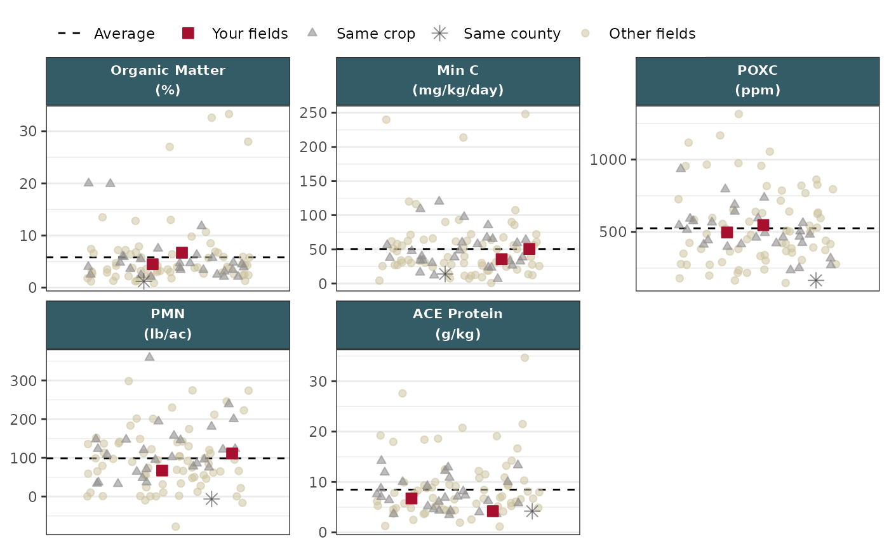
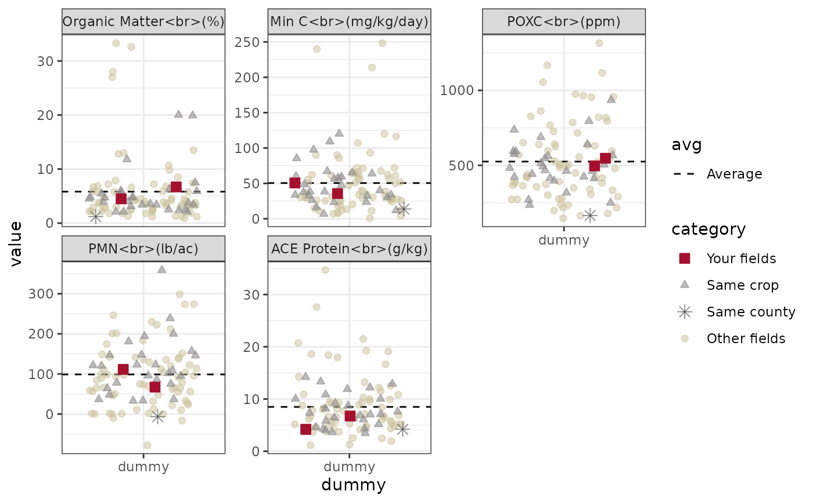

Theme for facetted strip plots
Usage
theme_facet_strip(
...,
body_font = "Poppins",
strip_color = washi::washi_pal[["standard"]][["blue"]],
strip_text_color = "white"
)Arguments
- ...
Other arguments to pass into
ggplot2::theme().- body_font
Font family to use throughout plot. Defaults to
"Poppins".- strip_color
Color of facet strip background. Defaults to WaSHI blue.
- strip_text_color
Color of facet strip text. Defaults to white.
Examples
# Read in wrangled example plot data
df_plot_path <- soils_example("df_plot.RDS")
df_plot <- readRDS(df_plot_path)
# Subset df to just biological measurement group
df_plot_bio <- df_plot |>
subset(measurement_group == "biological")
# Make strip plot with all measurements and set scales based on
# the category column and then apply theme.
# NOTE: the plot gets piped into the `set_scales()` function, which gets
# added to `theme_facet_strip()`.
make_strip_plot(
df_plot_bio,
x = dummy,
y = value,
id = sampleId,
group = abbr_unit,
tooltip = label,
color = category,
size = category,
alpha = category,
shape = category
) |>
set_scales() +
theme_facet_strip(body_font = "sans")

# Example without setting theme
make_strip_plot(
df_plot_bio,
x = dummy,
y = value,
id = sampleId,
group = abbr_unit,
tooltip = label,
color = category,
size = category,
alpha = category,
shape = category
) |>
set_scales()
